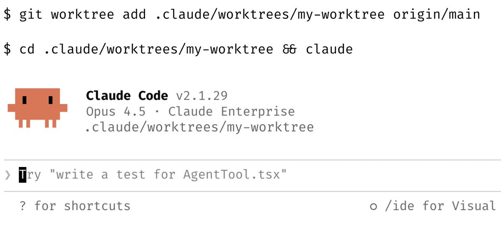
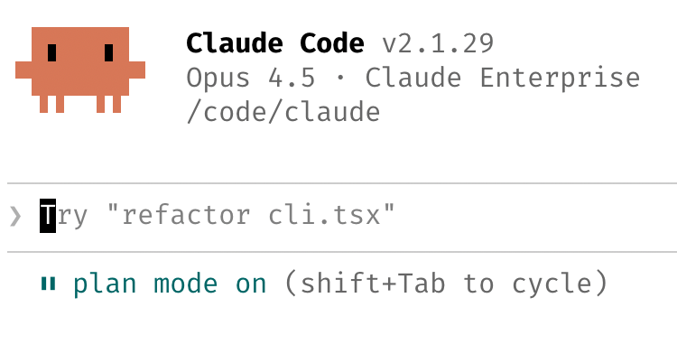
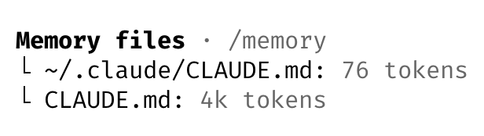
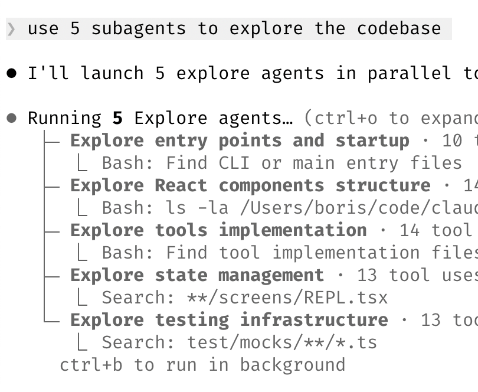

Claude Code 团队分享的实战技巧，涵盖并行会话、计划模式、CLAUDE.md 维护、自定义技能、Bug 自动修复、提示词优化、终端配置、子代理协作、数据分析以及学习辅助等 10 个核心建议。
1. 并行化处理
同时启动 3-5 个 git worktree，每个 worktree 运行独立的 Claude 会话。这是团队公认的最大生产力提升技巧。我个人习惯使用多个 git checkout，但大多数 Claude Code 团队成员更偏爱 worktree —— 这也是 @amorriscode 在 Claude Desktop 应用中原生支持 worktree 的原因！
有些人还会为 worktree 命名并设置 shell 别名（如 za、zb、zc），实现一键切换。还有人专门设置一个 “analysis” worktree，仅用于读取日志和运行 BigQuery 查询。

2. 复杂任务从计划模式开始
将精力集中在规划阶段，让 Claude 能够一次性高质量完成实现。
有人会让一个 Claude 编写计划，然后启动第二个 Claude 以高级工程师的身份进行审查。
还有人说，一旦事情偏离正轨，立即切换回计划模式重新规划，不要硬撑。他们还会明确告诉 Claude 在验证步骤时也进入计划模式，而不仅仅是构建阶段。

3. 精心维护 CLAUDE.md
每次修正后，在结尾加上：“更新你的 CLAUDE.md，避免再犯同样的错误。” Claude 非常擅长为自己编写规则。
持续迭代优化你的 CLAUDE.md，直到 Claude 的错误率明显下降。
有一位工程师让 Claude 为每个任务/项目维护一个笔记目录，每次 PR 后更新，然后将 CLAUDE.md 指向该目录。

4. 创建自定义技能并提交到 Git
在所有项目中重复使用你的技能。
团队建议： -
如果每天做某件事超过一次，就把它变成技能或命令 - 创建
/techdebt
斜杠命令，在每次会话结束时运行，查找并清理重复代码 -
设置斜杠命令，将过去 7 天的 Slack、GDrive、Asana 和 GitHub
同步到一个上下文汇总中 - 构建类似数据分析师的代理，编写 dbt
模型、审查代码并在开发环境中测试变更
5. 让 Claude 自动修复 Bug
以下是我们的最佳实践：
启用 Slack MCP，然后将 Slack 的 Bug 讨论串粘贴到 Claude 中，直接说 “fix” 即可。无需切换上下文。
或者，直接说 “去修复失败的 CI 测试”。不要微观管理具体怎么做。
让 Claude 查看 docker 日志来排查分布式系统问题 —— 它在这方面出乎意料地擅长。
6. 提升提示词技巧
a. 挑战 Claude
说 “仔细审查我的修改，我通过你的测试之前不要提交 PR”。让 Claude 成为你的代码审查员。或者说 “向我证明这能工作”，让 Claude 对比 main 分支和你的特性分支的行为差异。
b. 追求卓越
在得到一个平庸的修复后，说：“既然你已经知道了所有信息，扔掉这个方案，实现一个优雅的解决方案。”
c. 明确需求
在交接工作前编写详细的规格说明，减少歧义。你越具体，输出就越好。
7. 终端与环境配置
团队都很喜欢 Ghostty！大家喜欢它的同步渲染、24 位真彩色和完善的 Unicode 支持。
为了方便管理多个 Claude 会话，使用 /statusline
自定义状态栏，始终显示上下文使用情况和当前 git
分支。我们很多人还会给终端标签页着色和命名，有时使用 tmux ——
每个任务/worktree 一个标签页。
使用语音输入。你说话的速度是打字速度的 3 倍，而且提示词也会因此变得更加详细。（在 macOS 上按 fn 键两次）
8. 使用子代理
a. 增加计算资源
在任何希望 Claude 投入更多计算资源的请求后面加上 “use subagents”。
b. 保持专注
将单个任务交给子代理处理，保持主代理的上下文窗口干净且专注。
c. 安全审批
通过钩子将权限请求路由到 Opus 4.5 —— 让它扫描潜在的攻击并自动批准安全的请求（详见文档）。

9. 使用 Claude 进行数据分析
让 Claude Code 使用 “bq” CLI 即时提取和分析指标。我们在代码库中有一个 BigQuery 技能，团队里的每个人都在 Claude Code 中直接使用它进行数据分析查询。就我个人而言，已经 6 个多月没有写过一行 SQL 了。
这适用于任何有 CLI、MCP 或 API 的数据库。
10. 用 Claude 辅助学习
团队分享的使用 Claude Code 进行学习的几个技巧：
a. 解释模式
在 /config 中启用 “Explanatory” 或
“Learning” 输出风格，让 Claude
解释其变更背后的原因。
b. 可视化学习
让 Claude 生成可视化的 HTML 演示文稿来解释不熟悉的代码。它制作的幻灯片出乎意料地精美！
c. 图表辅助
让 Claude 绘制新协议和代码库的 ASCII 图表，帮助你理解它们。
d. 间隔重复
构建一个间隔重复学习技能：你解释你的理解，Claude 提出后续问题来填补知识空白，并存储学习结果。